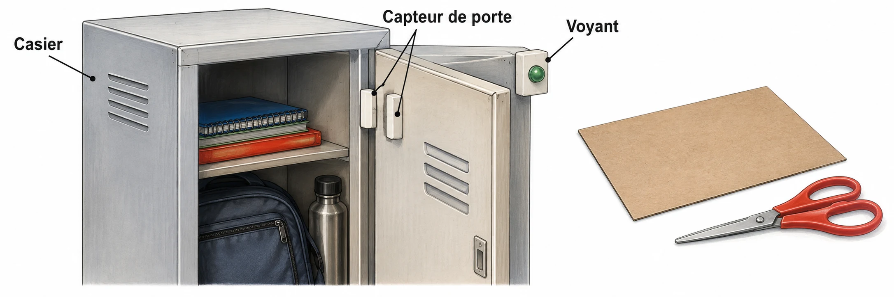

OBSERVER · EXPÉRIMENTER · EXPLIQUER
Fabriquer vérifier améliorer
Rejoue les séries de la fiche. Change la remise à zéro pour observer un défaut.

✎ Garde ta feuille à côté de toi.Ordinateur : manipulations et mesures simulées. Papier : relevés, réponses, calculs et croquis. Matériel réel : essai complémentaire si disponible.
À toi de construire le programme
Programme le compteur et le voyant, puis les séries A à D. Introduis le défaut demandé dans une copie du projet, corrige-le et rejoue tous les tests.
Utilise Scratch installé sur le poste, ou la version en ligne indiquée par le professeur. Aucun compte personnel nécessaire pour travailler sans partage.
Des observations pour expliquer
- Q3–Q4 : note les valeurs après chaque mesure, puis compare tes essais avant/après.
- Q2 : le programme à conserver doit être réalisé dans Scratch.
Appuie ton explication sur une valeur, un changement observé ou une comparaison. Distingue ce que montre le modèle et ce qui reste à vérifier.